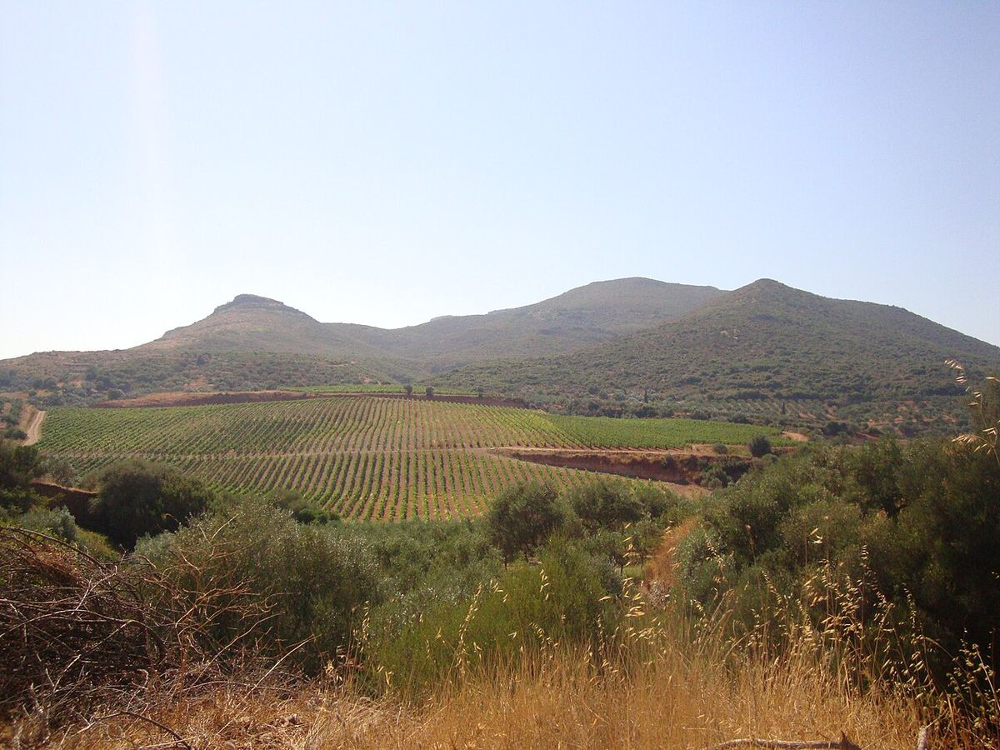

Greece
Greece is one of the cradles of wine culture in Europe and preserves a very broad heritage of native grape varieties. Today it stands out for the Assyrtiko whites of Santorini, the Xinomavro reds of Naoussa and Agiorgitiko reds of Nemea, and the sweet Muscats of the islands.

History
Wine has been part of Greek culture since antiquity. The Minoan and Mycenaean civilisations already made it, and in classical Greece it held a central place in the banquet, or symposion, and in the cult of Dionysus. The Greeks spread the vine through their colonies around the Mediterranean, from southern Italy to the Black Sea, and wines from islands such as Chios, Thasos and Lesbos were traded in amphorae throughout the ancient world. In the Middle Ages, under the Byzantine Empire and later under Venetian rule on several islands, sweet wines continued to be exported; the name Malvasia derives, according to the most widely accepted explanation, from the port of Monemvasia in the Peloponnese.
During the long Ottoman period, viticulture survived mainly in Christian communities and monasteries, but lost commercial importance. In the twentieth century the sector was dominated for decades by large houses and cooperatives, and abroad Greece was associated above all with retsina, a white wine flavoured with pine resin with a long tradition. The modern system of appellations was created in the early 1970s and integrated into the European framework after Greece joined the European Economic Community in 1981. From the 1980s and 1990s, a generation of winemakers trained abroad and of small wineries drove the revival of native grapes and a marked leap in quality.
Climate and soils
The climate is Mediterranean, with hot, dry summers and mild winters, but the mountainous terrain and altitude create many nuances: the north, in Macedonia, is cooler and wetter, with cold winters, while in the south and on the islands the influence of the sea and the Aegean winds, such as the meltemi, moderates the summer heat. Many vineyards lie on slopes and high plateaus that help preserve acidity. Soils range from the limestones and marls of the Peloponnese to the schists and clays of the north and the volcanic soils of Santorini, where vines grow on ash, pumice and lava.
Grapes and styles
Greece has several hundred native grape varieties. Among the whites, the leading ones are Assyrtiko, native to Santorini and able to keep very high acidity in hot climates; Moschofilero, aromatic and pink-skinned, from Mantinia; Malagousia, Roditis, Savatiano, widely planted in Attica, Robola from Cephalonia and Vidiano from Crete. Among the reds, the most notable are Xinomavro, acidic and tannic, from the north of the country, and Agiorgitiko, soft and fruity, from Nemea, together with Mavrodaphne, Liatiko, Kotsifali and Mandilaria. Muscats (Muscat Blanc à Petits Grains and Muscat of Alexandria) give highly regarded sweet wines on Samos, in Patras and on Lemnos. International varieties are also grown, often blended with local ones.
Styles include taut, saline dry whites, reds for ageing, rosés, traditional retsina and sweet wines from sun-dried grapes, such as Vinsanto from Santorini and Mavrodaphne of Patras.
Regulations
Quality wines are covered by protected designations of origin (PDO, in Greek ΠΟΠ) and protected geographical indications (PGI, ΠΓΕ). Many PDOs prescribe specific grapes: Naoussa is made only from Xinomavro, Nemea from Agiorgitiko and Mantinia mainly from Moschofilero. The traditional terms Reserve and Grande Reserve indicate wines with longer ageing, according to the rules of each appellation. Retsina is recognised as a traditional appellation.
Regions & appellations
Santorini
Protected designation of origin (PDO) · A volcanic island in the Cyclades whose very old vineyards, largely ungrafted, produce dry Assyrtiko whites of high acidity and saltiness, as well as Vinsanto, a sweet wine made from sun-dried grapes.
Naoussa
Protected designation of origin (PDO) · An appellation in Greek Macedonia, on the slopes of Mount Vermio, devoted exclusively to Xinomavro reds: wines with marked acidity and tannins, suited to long ageing.
Nemea
Protected designation of origin (PDO) · An appellation in the north-eastern Peloponnese, in the Corinth region, devoted to Agiorgitiko reds. Its vineyards rise from the valley floors to high slopes, giving wines that range from soft and fruity to age-worthy.